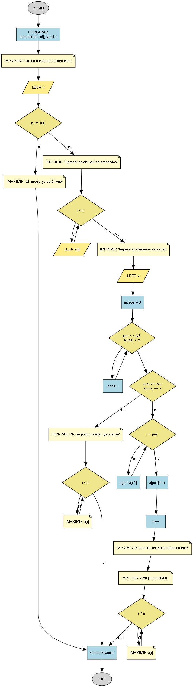

Insertar Elemento (Arreglo Ordenado)
Escribe un programa que inserte un nuevo número en un arreglo que ya está ordenado, asegurándose de que el arreglo se mantenga ordenado después de la inserción.

Requisitos
Todo el código debe estar dentro del método main.
- Pide la cantidad inicial de elementos con:
"Ingrese la cantidad de elementos iniciales (N < 100): ". - Pide los elementos ordenados con:
"Ingrese los [n] elementos del arreglo (ordenados):". - Pide el elemento a insertar con:
"Ingrese el elemento a insertar (X): ". - Busca la posición correcta donde debe ir el nuevo elemento.
- Si el elemento ya existe, muestra el mensaje:
"No se pudo insertar el elemento (ya existe)."y el arreglo sin cambios. - Si el elemento no existe, desplaza los elementos necesarios a la derecha, inserta el nuevo número y muestra:
"Elemento insertado exitosamente."seguido de"Arreglo resultante:". - Imprime siempre el estado final del arreglo en una sola línea, con elementos separados por espacios.
Ejemplo de uso esperado
Ingrese la cantidad de elementos iniciales (N < 100): 4
Ingrese los 4 elementos del arreglo (ordenados):
10
20
40
50
Ingrese el elemento a insertar (X): 30
Elemento insertado exitosamente.
Arreglo resultante:
10 20 30 40 50
Ingrese la cantidad de elementos iniciales (N < 100): 3
Ingrese los 3 elementos del arreglo (ordenados):
10
20
30
Ingrese el elemento a insertar (X): 20
No se pudo insertar el elemento (ya existe).
10 20 30